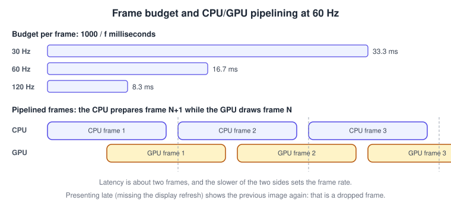
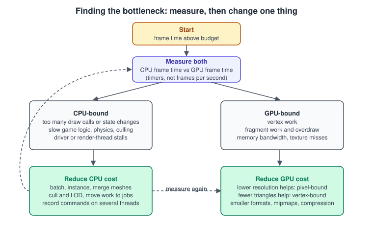
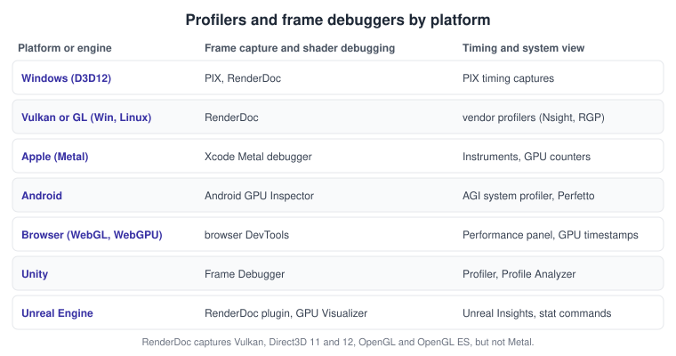

Performance and Profiling
|
This content was generated with the assistance of AI and should be verified against the official documentation before being relied on in production. |
This page was checked in November 2026. It is a method more than a list of tricks: measure, decide whether the CPU or the GPU limits the frame, change one thing, and measure again. The examples use OpenGL 4.6, Vulkan 1.4, WebGPU, Metal 4 (Swift), Unity 6.3 LTS and Unreal Engine 5.8, on Windows, Linux, macOS, Android and in browsers. Tool versions are named where they matter: RenderDoc is at v1.47 and captures Vulkan, Direct3D 11 and 12, OpenGL and OpenGL ES, but not Metal. Microsoft’s PIX (Direct3D 12) is named for context only. Which tool applies depends on the platform, as the table later in this page shows.
Frame time, not frames per second
Frames per second is a poor unit for performance work because it is nonlinear: going from 30 to 60 frames per second saves 16.7 ms, going from 60 to 120 saves only 8.3 ms. Work in milliseconds. The budget for a target refresh rate is
which is 33.3 ms at 30 Hz, 16.7 ms at 60 Hz and 8.3 ms at 120 Hz. Leave a margin of a few milliseconds: variation, not the average, causes visible stutter. CPU and GPU work overlap in a pipeline: the CPU prepares frame N+1 while the GPU draws frame N, so the frame rate is limited by the slower of the two, and latency is about two frames.

Also consider the frame pacing: frames must reach the display at even intervals. A steady 30 Hz looks better than an
alternating 16.7 ms and 33.3 ms. Present on the display’s refresh using the platform’s mechanism
(requestAnimationFrame in browsers, CADisplayLink on Apple platforms, Choreographer and the Android Frame Pacing
library on Android), and see
Game Loop and Frame Timing for the loop itself.
CPU-bound or GPU-bound
The first question is which side is the bottleneck, because the fixes are different.
| Test | If the frame time barely changes | If the frame time drops |
|---|---|---|
Halve the render resolution (or the window size) |
The GPU is not limited by pixels: look at the CPU or vertex work. |
The GPU is fragment-bound (shader cost, overdraw, bandwidth). |
Halve the number of objects drawn or the triangle count |
Not CPU draw-call-bound and not vertex-bound. |
Draw calls or vertex work limit you. |
Skip the draw calls entirely (render nothing, keep the game logic) |
The CPU side (logic, physics, culling, submission) is the limit. |
The GPU is the limit. |
Compare CPU frame time and GPU frame time (timers below) |
The larger of the two is the bottleneck. |
Optimise that one, then re-measure. |

The same experiments work in every engine and API. Engines also have counters for them (Unity’s Profiler and Unreal’s
stat unit).
Timing the GPU
The CPU cannot time GPU work by looking at a clock when it submits commands, because submission returns immediately. Use GPU timers, which write a timestamp when the GPU reaches a point in the command stream, and read the result a frame or two later so that reading does not stall the pipeline.
OpenGL: timer queries
#include <GL/glew.h> /* or glad; requires an OpenGL 3.3 or newer context */
static GLuint query[2]; /* double buffer so the result is read one frame late */
static int cur = 0;
void init_timer(void) { glGenQueries(2, query); }
void frame(void) {
glBeginQuery(GL_TIME_ELAPSED, query[cur]);
/* ... shadow pass, opaque pass, transparent pass ... */
glEndQuery(GL_TIME_ELAPSED);
GLuint prev = query[cur ^ 1];
GLint available = 0;
glGetQueryObjectiv(prev, GL_QUERY_RESULT_AVAILABLE, &available);
if (available) {
GLuint64 ns = 0;
glGetQueryObjectui64v(prev, GL_QUERY_RESULT, &ns);
printf("GPU time: %.3f ms\n", (double)ns / 1.0e6);
}
cur ^= 1;
}Source: OpenGL 4 reference: glBeginQuery
OpenGL ES offers the same through the EXT_disjoint_timer_query extension, which can report a "disjoint" error when the
GPU clock changed during the measurement, so discard such results.
Vulkan: timestamp queries
#include <vulkan/vulkan.h>
/* Once: a pool with two timestamps per frame in flight. */
VkQueryPoolCreateInfo qpci = { VK_STRUCTURE_TYPE_QUERY_POOL_CREATE_INFO };
qpci.queryType = VK_QUERY_TYPE_TIMESTAMP;
qpci.queryCount = 2;
VkQueryPool pool;
vkCreateQueryPool(device, &qpci, NULL, &pool);
/* Recording: reset outside a render pass, then write before and after the work. */
vkCmdResetQueryPool(cmd, pool, 0, 2);
vkCmdWriteTimestamp(cmd, VK_PIPELINE_STAGE_TOP_OF_PIPE_BIT, pool, 0);
/* ... draw calls ... */
vkCmdWriteTimestamp(cmd, VK_PIPELINE_STAGE_BOTTOM_OF_PIPE_BIT, pool, 1);
/* After the frame's fence signalled: read both values and convert with timestampPeriod. */
uint64_t t[2];
vkGetQueryPoolResults(device, pool, 0, 2, sizeof t, t, sizeof t[0],
VK_QUERY_RESULT_64_BIT | VK_QUERY_RESULT_WAIT_BIT);
VkPhysicalDeviceProperties props;
vkGetPhysicalDeviceProperties(physicalDevice, &props);
double ms = (double)(t[1] - t[0]) * props.limits.timestampPeriod / 1.0e6; /* period is in nanoseconds */Source: Vulkan: vkCmdWriteTimestamp
Check that the queue family reports timestampValidBits greater than zero before relying on timestamps.
WebGPU: timestamp-query
Timestamp queries are an optional feature, so request them and handle their absence. Browsers may reduce their resolution to limit side-channel attacks.
const adapter = await navigator.gpu.requestAdapter();
const canTime = adapter.features.has('timestamp-query');
const device = await adapter.requestDevice({ requiredFeatures: canTime ? ['timestamp-query'] : [] });
const querySet = device.createQuerySet({ type: 'timestamp', count: 2 });
const resolve = device.createBuffer({ size: 16, usage: GPUBufferUsage.QUERY_RESOLVE | GPUBufferUsage.COPY_SRC });
const readback = device.createBuffer({ size: 16, usage: GPUBufferUsage.COPY_DST | GPUBufferUsage.MAP_READ });
function encodeFrame(context, pipeline) {
const encoder = device.createCommandEncoder();
const pass = encoder.beginRenderPass({
colorAttachments: [{ view: context.getCurrentTexture().createView(), loadOp: 'clear', storeOp: 'store' }],
timestampWrites: { querySet, beginningOfPassWriteIndex: 0, endOfPassWriteIndex: 1 },
});
pass.setPipeline(pipeline);
pass.draw(3);
pass.end();
encoder.resolveQuerySet(querySet, 0, 2, resolve, 0);
encoder.copyBufferToBuffer(resolve, 0, readback, 0, 16);
device.queue.submit([encoder.finish()]);
}
async function readMs() {
await readback.mapAsync(GPUMapMode.READ);
const t = new BigUint64Array(readback.getMappedRange().slice(0));
readback.unmap();
return Number(t[1] - t[0]) / 1e6; // timestamps are in nanoseconds
}Metal: command buffer GPU times
import Metal
func timeFrame(queue: MTLCommandQueue, encode: (MTLCommandBuffer) -> Void) {
guard let cb = queue.makeCommandBuffer() else { return }
cb.addCompletedHandler { buffer in
// gpuStartTime and gpuEndTime are in seconds on the same clock as CACurrentMediaTime().
let gpuMs = (buffer.gpuEndTime - buffer.gpuStartTime) * 1000.0
print(String(format: "GPU time: %.3f ms", gpuMs))
}
encode(cb)
cb.commit()
}Source: Apple: MTLCommandBuffer
For per-pass timing, Metal exposes counter sample buffers (see the GPU counters documentation), and Xcode shows per-encoder GPU times without any code.
Draw calls, batching and state changes
Every draw call costs CPU time: the driver validates state, patches shaders or pipelines and writes commands. Older APIs (OpenGL, Direct3D 11) pay this cost on every call, so thousands of draw calls can cost several milliseconds. Explicit APIs (Vulkan, Metal, Direct3D 12, WebGPU) move most validation to pipeline creation and make each call cheaper, but they do not make it free. Ways to reduce the cost:
-
Instancing draws many copies of one mesh in one call, with per-instance data (transform, colour) in a buffer.
-
Batching merges objects that share a material into one buffer; Unity’s SRP Batcher and Unreal’s mesh draw commands reduce per-object state setup.
-
Sorting draws by pipeline, then material, then texture to minimise state changes; transparency needs back-to-front order instead.
-
Indirect drawing lets the GPU produce draw arguments itself (culling on the GPU).
-
Texture atlases and texture arrays let several objects share a binding.
-
Merging static geometry and using LOD reduces both draw calls and triangles.
The Bookshelf holds nine books that share one mesh. Instancing draws all of them with one call:
/* One VBO/IBO for the book mesh, one buffer of 9 model matrices bound as an instanced attribute. */
glBindVertexArray(bookVao);
glDrawElementsInstanced(GL_TRIANGLES, bookIndexCount, GL_UNSIGNED_SHORT, 0, 9);Pipeline state changes (shader, blend state, render target) are more expensive than binding a different texture, so sort by them first. The explicit-API objects that make this cheap are explained in Explicit vs Implicit APIs.
Overdraw and fill rate
Overdraw is shading a pixel more than once. Each extra layer wastes fragment-shader time and bandwidth. Causes are transparent layers (smoke, foliage, UI), large particles and drawing opaque objects back-to-front. Fixes:
-
Draw opaque objects roughly front-to-back so the early depth test rejects hidden fragments, and keep the depth test enabled.
-
Use a depth pre-pass only when the fragment shader is expensive enough to pay for the extra geometry pass.
-
Shrink transparent quads to their visible shape and limit particle counts and sizes.
-
On tile-based GPUs (most phones and all Apple GPUs), hidden-surface removal avoids shading hidden opaque pixels, but transparency and alpha-tested geometry still cost; see GPU Architecture Basics.
Tools show overdraw as a heat map (the Unity Scene view’s Overdraw mode, Unreal’s Shader Complexity view, Android GPU Inspector, and Xcode’s GPU tools).
Bandwidth and memory
Reading and writing textures and render targets moves data across the memory bus, which is often the real limit on mobile and integrated GPUs. Typical remedies are:
-
Compressed textures (BCn on desktop, ASTC and ETC2 on mobile, delivered in KTX 2.0) that stay compressed in memory.
-
Mipmaps for every minified texture; they improve both speed (cache hits) and quality (see Textures, Sampling and Mipmaps).
-
Smaller render target formats (for example R11G11B10 instead of RGBA16F where precision allows) and no wasted attachments.
-
Avoiding load and store of attachments you do not need on tile-based GPUs (clear or don’t-care on load, don’t-care on store).
-
Fewer full-screen passes, or merging post-processing passes (see Transparency, Blending and Post-Processing).
-
Reading back GPU data to the CPU only when unavoidable, and asynchronously: a synchronous readback stalls the pipeline.
Synchronisation, stalls and hitches
-
Calls that wait for the GPU (
glFinish, synchronous buffer mapping, query reads in the same frame,vkQueueWaitIdle) turn the pipeline into a sequence and double the frame time. Use fences and read results a frame or two later. -
Triple-buffer dynamic data (a ring of buffers) so the CPU never writes data that the GPU is still reading.
-
Pipeline and shader compilation at first use causes hitches. Create pipelines at load time, use pipeline caches (Vulkan), binary archives (Metal) or the engine’s shader precompilation and PSO caches, and warm them in a loading screen.
-
Garbage collection in C# (Unity) and JavaScript (three.js) causes occasional spikes; avoid per-frame allocations and pool objects.
-
Thermal throttling on phones reduces clock speed after minutes of load; Android’s Dynamic Performance Framework (ADPF) and Apple’s thermal-state APIs report it so that you can reduce quality instead of dropping frames.
Threads
Rendering work is split across threads in every serious renderer. Engines use a game thread, a render thread and often an RHI thread (Unreal) or a render thread (Unity), plus job systems for parallel work. Vulkan, Metal and Direct3D 12 let you record command buffers on several threads and submit them together, which is the main way explicit APIs raise the draw-call limit; OpenGL contexts and WebGL canvases are tied to one thread. A common mistake is to add threads before checking that the main thread is the bottleneck.
Tools by platform

-
RenderDoc captures a frame from a running application, lists every call, shows each draw’s inputs and outputs, and lets you debug shaders. It is free and open source, and works with Vulkan, Direct3D 11 and 12, OpenGL and OpenGL ES, not Metal.
-
Xcode’s Metal debugger and GPU tools capture Metal frames, show a dependency graph of passes, per-shader costs, memory and bandwidth, and, with Instruments, system-level timelines on iOS, macOS and visionOS.
-
PIX is Microsoft’s tool for Direct3D 12 on Windows and Xbox; it is named here for context.
-
Android GPU Inspector (AGI) profiles Vulkan and OpenGL ES apps on supported devices and shows frame traces with GPU counters; Perfetto records system-wide traces.
-
Vendor tools (NVIDIA Nsight Graphics, AMD Radeon GPU Profiler and others) show hardware counters that general tools cannot.
-
Browsers have performance panels, and WebGPU adds timestamp queries as above.
-
Unity: the Profiler for CPU, GPU and memory, the Frame Debugger for stepping through draws, and ProfilerMarker for your own scopes.
-
Unreal Engine: Unreal Insights (traces),
stat unitandstat gpuin the console, the GPU Visualizer and the RenderDoc plugin.
Adding your own scope to the engine profilers makes the problem visible in context:
using Unity.Profiling;
using UnityEngine;
public class BookStepper : MonoBehaviour
{
static readonly ProfilerMarker stepMarker = new ProfilerMarker("Bookshelf.StepBooks");
void Update()
{
using (stepMarker.Auto()) // appears as a named bar in the Profiler's CPU timeline
{
// advance the falling books
}
}
}#include "ProfilingDebugging/CpuProfilerTrace.h"
void ABookSpawner::StepBooks(float DeltaSeconds)
{
TRACE_CPUPROFILER_EVENT_SCOPE(BookSpawner_StepBooks); // shown as a bar in Unreal Insights
// advance the falling books
}Source: Unreal Engine: Trace
Run the game with tracing enabled (for example the -trace=cpu,gpu,frame command-line option) and open the session in
Unreal Insights.
A profiling workflow
-
Fix the test: one scene, one camera path, one device, release or development build (not the editor), VSync off for throughput numbers and on for pacing numbers.
-
Capture CPU and GPU frame times over several seconds, not one frame.
-
Decide CPU-bound or GPU-bound with the experiments above.
-
Open a frame in a frame debugger and find the most expensive pass, draw or shader.
-
Change one thing, re-measure, and keep the change only if it helps on the target device, not only on your workstation.
-
Re-test on the slowest supported hardware and on battery.
Common mistakes
-
Optimising from a frame-per-second number or from the editor’s frame time.
-
Profiling a debug build, or with validation layers or capture tools attached, and treating the numbers as final.
-
Timing GPU work with the CPU clock around a draw call.
-
Optimising shaders when the CPU is the limit, or reducing draw calls when the GPU is the limit.
-
Measuring only the average frame time; check the 99th percentile and the worst frames.
-
Changing several settings at once so that nothing can be attributed.
Recent changes
-
RenderDoc v1.47 is the current release at the time of writing, and still does not capture Metal.
-
WebGPU timestamp queries are an optional feature, available in browsers that implement
timestamp-query. -
Metal 4 adds new command-encoding and counter facilities and is required on A14 and M1 or later; Xcode 27 is the matching tool.
-
Unity 6 centres on URP with Render Graph (the Built-in Render Pipeline is deprecated), and Unreal Engine 5 continues to move large-scene cost to GPU-driven techniques such as Nanite.
-
Android’s Frame Pacing library and ADPF are the recommended routes to stable frame rates on phones.
What the books say, and where they are outdated
Two of the section’s sources discuss performance. The OpenGL SuperBible (4th edition) has a chapter on faster geometry throughput (display lists, vertex arrays and vertex buffer objects) and another on occlusion queries, which skip drawing objects hidden behind others. The concepts hold: reduce per-vertex and per-call cost, and avoid work that cannot be seen. Daniel Selman’s Java 3D Programming closes with a chapter on the library’s internals and tuning: the renderer and behaviour threads, compiling branches of the scene graph so that the runtime can optimise them, and passing geometry by reference. The Java 3D idea of declaring up front what may change (capability bits) so that the system can optimise the rest is an ancestor of static batching and of baking in engines.
| What the book teaches | Current practice |
|---|---|
Display lists and immediate mode ( |
Vertex buffer objects and vertex array objects in the core profile; instancing and indirect drawing. |
Occlusion queries as the way to cull |
Still available; engines use GPU-driven and hierarchical depth culling, and explicit APIs expose query pools and conditional rendering. |
Compiling a Java 3D branch graph and setting capability bits |
Static batching, baked lighting and pipeline caches in engines; explicit pipeline objects in Vulkan and Metal. |
Java 3D render thread and behaviour scheduler |
Explicit job systems, render threads and multithreaded command recording. |
Vendor-specific performance guides of the OpenGL 2 era |
RenderDoc, Xcode, AGI and vendor profilers with hardware counters. |
See it in
OpenGL: OpenGL Performance; WebGL: WebGL Performance and Debugging and three.js Performance and Disposal; Metal: Performance Best Practices and Debugging and Profiling Metal; Vulkan: Multithreading and Performance in Vulkan and Debugging and Capture Tools for Vulkan; Unity: Profiling and Optimization; Unreal Engine: Profiling and Optimization.
References
-
Microsoft: PIX on Windows (context)
-
Richard S. Wright Jr., Benjamin Lipchak and Nicholas Haemel, OpenGL SuperBible 4th edition: Addison-Wesley
-
Daniel Selman, Java 3D Programming: Manning